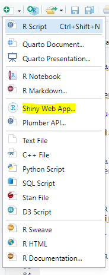
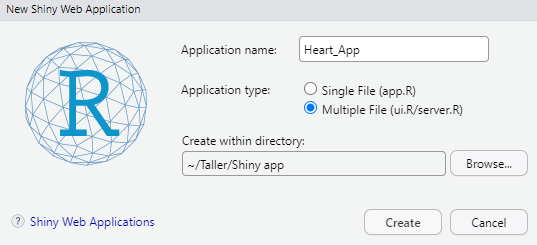

Capítulo 7 Visualización con shiny
Shiny es un marco para crear aplicaciones web reactivas con R. Combinado con plotly, permite construir gráficos interactivos que responden a entradas del usuario (filtros, clics, selección, zoom) sin salir del ecosistema de R.
Por qué Shiny + plotly
- Mantienes la gramática de R y obtienes una UI web sin escribir JavaScript.
- plotly ya es interactivo; con Shiny reactivas los datos, controlas el estado y vinculas vistas.
- Útil cuando necesitas: filtros en vivo, selección/brush, descargas, reportes o lógica del lado del servidor.
Cuándo preferir solo plotly
- Explorar/compartir un gráfico único sin lógica adicional (HTML autocontenido).
- Documentos estáticos (Rmd) donde basta con hover/zoom y no hace falta estado compartido.
Patrones clave
- Entradas → datos reactivos →
renderPlotly()
- Vinculación entre gráficos con
event_data()(clic/selección/hover/zoom).
- Crosstalk (
highlight_key) para enlazar sin servidor (opcional).
7.1 El contexto: enfermedades cardiovasculares
Construyamos un tablero con Shiny para la predicción de enfermedades cardiovasculares
Antes de sumergirnos en el código, es crucial entender el “qué” y el “porqué” de nuestro proyecto. Vamos a explorar el problema que intentamos resolver y el conjunto de datos que será nuestra principal herramienta.
Las enfermedades cardiovasculares (ECV) son la causa número 1 de muerte en el mundo. Se estima que cada año se cobran \(17.9\) millones de vidas, lo que representa el \(31\%\) de todas las muertes a nivel global. El fallo cardíaco es un evento común causado por las ECV, y la detección temprana es clave para salvar vidas.
Aquí es donde entra en juego el Machine Learning. Al analizar distintos factores de riesgo, podemos construir un modelo que ayude a los profesionales de la salud a predecir la probabilidad de que un paciente sufra una enfermedad cardíaca, permitiendo una intervención temprana y un mejor manejo de la condición.
7.1.1 Atributos del conjunto de datos
Nuestro conjunto de datos contiene 918 observaciones (pacientes) y 11 características (atributos) que usaremos para entrenar nuestro modelo. La duodécima variable, HeartDisease, es nuestro objetivo a predecir.
| Nombre del Atributo | Descripción | Valores Posibles |
|---|---|---|
| Age | Edad del paciente | Valor numérico |
| Sex | Sexo del paciente | M (Masculino), F (Femenino) |
| ChestPainType | Tipo de dolor de pecho | TA (Angina Típica), ATA (Angina Atípica), NAP (Dolor No Anginoso), ASY (Asintomático) |
| RestingBP | Presión arterial en reposo | Valor numérico en mm Hg |
| Cholesterol | Colesterol sérico | Valor numérico en mm/dl |
| FastingBS | Azúcar en sangre en ayunas | 1 (> 120 mg/dl), 0 (<= 120 mg/dl) |
| RestingECG | Resultados del electrocardiograma en reposo | Normal, ST (anormalidad de la onda ST-T), LVH (hipertrofia ventricular izquierda) |
| MaxHR | Frecuencia cardíaca máxima alcanzada | Valor numérico (60-202) |
| ExerciseAngina | Angina inducida por el ejercicio | Y (Sí), N (No) |
| Oldpeak | Depresión del ST inducida por el ejercicio en relación con el reposo | Valor numérico |
| ST_Slope | Pendiente del segmento ST en el pico del ejercicio | Up (ascendente), Flat (plano), Down (descendente) |
| HeartDisease | Clase de salida (objetivo) | 1 (padece enfermedad cardíaca), 0 (Normal) |
7.1.2 Origen y descarga
Este es el conjunto de datos sobre enfermedades cardíacas más grande disponible para investigación hasta la fecha. Fue creado combinando cinco datasets diferentes del UCI Machine Learning Repository.
Puedes descargar el dataset directamente desde Kaggle en el siguiente enlace: Descargar Dataset

7.2 Preparación del entorno
7.2.1 Estructura del código
La estructura de carpetas de la aplicación será la siguiente:
├── App 📁
├── global.R
├── server.R
├── ui.R
├── heart.csv
└── www/
└── heart-pulse.svg
Nuestra aplicación se compondrá de 3 archivos de R principales que trabajan juntos:
global.R:Se ejecuta primero. Contiene la carga de librerías, la carga de datos y el preprocesamiento. Todo lo que se defina aquí (variables, funciones, etc.) estará disponible para los archivosui.Ryserver.R.ui.R:Define la interfaz de usuario. Contiene el objeto ui.server.R:Define la lógica del servidor. Contiene la función server.
7.2.2 Tarea 1: Crear proyecto de la app
Crea la carpeta principal: En tu computadora, crea una nueva carpeta para el proyecto. Llámala
TallerShiny_Corazon.Crea un nuevo proyecto de app en Shiny dando click en el icono que se encuentra en la esquina superior derecha.

- En el tipo de aplicación seleciona la opción de archivos multiples y crea la app en la carpeta que creaste.

Por defecto solo se crean los archivos server.R y ui.R, por lo que se debe crear el archivo global.R manualmente en la carpeta de la app.
Añade los demás Recursos:
Crea una subcarpeta llamada exactamente
www.Copia el archivo
heart.csvy pégalo dentro de la carpeta principal TallerShiny_Corazon.Copia tu archivo de logo (p. ej., mi_logo.png) y pégalo dentro de la subcarpeta
www. Puedes buscar logos en la siguiente pagina: Link
7.2.3 Tarea 2: Instalación de paquetes
Ejecuta el siguiente comando en la consola para instalar todos los paquetes que usaremos:
Code
install.packages(c(
"shiny", # El motor principal de Shiny
"shinydashboard", # Para crear dashboards atractivos
"tidyverse", # Para manipulación de datos (dplyr) y gráficos (ggplot2)
"DT", # Para crear tablas de datos interactivas
"plotly", # Para hacer nuestros gráficos interactivos
"caret", # Para entrenar modelos de Machine Learning
"randomForest", # El algoritmo Random Forest
"pROC" # Para calcular y dibujar la curva ROC
))7.2.3.1 Creando la interfaz principal
En este módulo, construiremos la estructura visual completa de nuestro dashboard: una cabecera profesional con nuestro logo, una barra lateral de navegación y un cuerpo principal donde vivirá nuestro contenido.
En esta app, vamos a utilizar la libreria shinydashboard. Esta libreria facilita la creación de aplicacions al estilo de dashboards en Shiny. Referencia shinydashboard.
Toda aplicación shinydashboard se envuelve en una función dashboardPage(). Esta función organiza los tres componentes principales:
dashboardHeader(): La barra superior.dashboardSidebar(): El menú lateral.dashboardBody(): El área de contenido principal.

7.2.4 Tarea 3: Establecer la caja de herramientas
- Abre tu archivo
global.Ry añade el código para cargar todas las librerías y nuestro conjunto de datos. Este archivo se ejecutará una sola vez al iniciar la app.
Code
# --- Archivo: global.R ---
# 1. Cargar las librerías necesarias
library(shiny)
library(shinydashboard)
library(tidyverse)
library(DT)
library(plotly)
library(caret)
library(randomForest)
library(pROC)
# 2. Cargar y preparar los datos
df <- read.csv("heart.csv")
# 3. Renombrar la variable de salida para mayor claridad
df <- df %>%
rename(EnfermedadCorazon = HeartDisease)
# 4. Convertir variables a tipo 'factor' para un mejor manejo
df <- df %>%
mutate(
Sex = as.factor(Sex),
ChestPainType = as.factor(ChestPainType),
FastingBS = as.factor(FastingBS),
RestingECG = as.factor(RestingECG),
ExerciseAngina = as.factor(ExerciseAngina),
ST_Slope = as.factor(ST_Slope),
EnfermedadCorazon = as.factor(EnfermedadCorazon)
)
# 5. Cambiar los niveles de la variable objetivo por etiquetas más claras
levels(df$EnfermedadCorazon) <- c("No", "Sí")
# 6. Mensaje de confirmación en la consola
cat("Datos cargados y preprocesados en global.R\n")7.2.5 Tarea 4: Layout de la interfaz de usuario
En esta tarea vamos a darle vida a la interfaz de usuario.
- En nuestro archivo
ui.R, borramos el contenido para generar el layout base condashboardPage():
Code
- Cabecera con logo y titulo:
Primero vamos a editar el dashboardHeader(), para incluir nuestro logo (que debemos tener guardado en la carpeta www) y el título. Dentro del dashboardPage() debemos pegar el siguiente codigo:
Code
- Las pestañas de navegación:
Dentro de dashboardSidebar(), usamos sidebarMenu() para crear nuestra navegación. Cada menuItem() representa un botón en el menú.
text: El texto visible.tabName: UnIDinterno que usaremos para conectar el botón con su contenido.icon: Un pequeño ícono para darle un toque visual.
Dentro del dashboardPage() y seguido al codigo de dashboardHeader(), incluimos el siguiente codigo para la barra de navegación:
Code
# 2. Barra Lateral de Navegación
dashboardSidebar(
width = 450,
sidebarMenu(
menuItem("Análisis Exploratorio", tabName = "eda", icon = icon("chart-bar")),
menuItem("Entrenamiento del Modelo", tabName = "entrenamiento", icon = icon("gears")),
menuItem("Predicciones", tabName = "predicciones", icon = icon("laptop"))
)
),- Contenido de cada pestaña (Body):
Finalmente, en dashboardBody(), usamos tabItems() para definir el contenido de cada pestaña. Cada tabItem() corresponde a un menuItem de los creados en el paso anterior, y se conectan a través del ID que definimos en tabName.
Dentro del dashboardPage() y seguido al codigo de dashboardSidebar(), incluimos el siguiente codigo para la barra de navegación:
Code
# 3. Cuerpo del Dashboard
dashboardBody(
tabItems(
# Contenido de la Pestaña 1: Análisis Exploratorio
tabItem(tabName = "eda",
h2("Análisis Exploratorio de Datos")
),
# Contenido de la Pestaña 2: Entrenamiento
tabItem(tabName = "entrenamiento",
h2("Entrenamiento de un Modelo Predictivo")
),
# Contenido de la Pestaña 3: Predicciones
tabItem(tabName = "predicciones",
h2("Realizar una Predicción")
)
)
)- Guarda todos tus archivos y haz clic en “Run App”.
👁️ Resultado de esta tarea
Code
# --- Archivo: ui.R ---
library(shinydashboard)
# Define la UI (Interfaz de Usuario)
ui <- dashboardPage(skin = "purple",
# 1. Cabecera del Dashboard
dashboardHeader(
title = tagList(
tags$img(src = 'mi_logo.png', height = '45', style = "padding-right:10px;"),
"Análisis de Enfermedades Cardíacas"
),
titleWidth = 450
),
# 2. Barra Lateral de Navegación
dashboardSidebar(
width = 450,
sidebarMenu(
menuItem("Análisis Exploratorio", tabName = "eda", icon = icon("chart-bar")),
menuItem("Entrenamiento del Modelo", tabName = "entrenamiento", icon = icon("gears")),
menuItem("Predicciones", tabName = "predicciones", icon = icon("laptop"))
)
),
# 3. Cuerpo del Dashboard
dashboardBody(
tabItems(
# Contenido de la Pestaña 1: Análisis Exploratorio
tabItem(tabName = "eda",
h2("Análisis Exploratorio de Datos")
),
# Contenido de la Pestaña 2: Entrenamiento
tabItem(tabName = "entrenamiento",
h2("Entrenamiento de un Modelo Predictivo")
),
# Contenido de la Pestaña 3: Predicciones
tabItem(tabName = "predicciones",
h2("Realizar una Predicción")
)
)
)
)Por ahora el archivo server.R sigue vacio.
7.2.6 Tarea 5: Definir la ui de la exploración de datos
En esta tarea vamos a crear la primera pestaña de la aplicación, la pestaña de Análisis exploratorio de datos (EDA). Al final de este módulo, se tendrán gráficos y tablas que reaccionan instantáneamente a las selecciones del usuario.
Aquí es donde nuestro archivo server.R, hasta ahora vacío, entra en acción.
Ahora se va a definir los elementos que el usuario verá en la pestaña del EDA. Los elementos principales para organizar el contendio serán box(), para organizar la información en cajas, y fluidRow() para organizar la información en filas.
En la pestaña de EDA, organizamos la interfaz en tres filas principales (fluidRow). Cada una tiene un propósito específico:
- Primera fluidRow: La fila de resumen (con los valueBox)
Esta será la fila superior que contiene las cuatro cajas de colores con los números clave (Observaciones, Variables, etc.). Actúa como un “panel de vitales” para nuestro dataset. Su objetivo es dar al usuario una visión general e instantánea de los datos con los que está trabajando, incluso antes de empezar a explorarlos en detalle.
Code
# Fila de Cajas con Métricas (Value Boxes)
fluidRow(
box(
width = 12,
title = "Resumen del dataset",
status = "primary",
solidHeader = TRUE,
collapsible = TRUE,
fluidRow(
column(3, valueBox(nrow(df), "Observaciones", width = 12, color="navy")),
column(3, valueBox(ncol(df), "Variables", width = 12, color="navy")),
column(3, valueBox(paste0(round(sum(df$EnfermedadCorazon == "Sí") / nrow(df) * 100), "%"), "% con Enfermedad", width = 12, color="navy")),
column(3, valueBox(sum(is.na(df)), "Valores Faltantes", width = 12, color="navy"))
)
)
),- Segunda fluidRow: El centro de mando interactivo
Esta es la fila central que contiene la caja de controles a la izquierda (menús desplegables, sliders) y la caja del gráfico a la derecha. Esta es el corazón de la interactividad. A la izquierda, le damos al usuario las “palancas y botones” para hacer preguntas a los datos. A la derecha, le mostramos la respuesta a esas preguntas de forma visual. Es la manifestación más clara de la conexión entre input y output.
Code
# Fila con Controles y Gráfico
fluidRow(
# Caja de Controles
box(
title = "Configuración de gráficos", status = "primary", solidHeader = TRUE, width = 4,
selectInput("variable", "Selecciona una variable:",
choices = c(
"Edad" = "Age",
"Sexo" = "Sex",
"Tipo de Dolor de Pecho" = "ChestPainType",
"Nivel de Colesterol" = "Cholesterol",
"Frecuencia Cardíaca Máxima" = "MaxHR"
)
),
sliderInput("rango_edad", "Filtra por Rango de Edad:",
min = min(df$Age), max = max(df$Age), value = c(min(df$Age), max(df$Age)))
),
# Caja para el Gráfico
box(
title = "Gráfico Interactivo", status = "success", solidHeader = TRUE, width = 8,
# Usamos plotlyOutput para un gráfico interactivo
plotlyOutput("distPlot")
)
),- Tercera fluidRow: La vista detallada (con la dataTable) Esta es la última fila que contiene la tabla de datos interactiva. Funciona como una “lupa”. Mientras que el gráfico nos da una visión agregada y visual, la tabla nos permite inspeccionar las filas de datos individuales que componen ese gráfico. Permite buscar, ordenar y verificar los datos crudos, ofreciendo un nivel de detalle que el gráfico no puede.
Code
👁️ Resultado de esta tarea
Code
# Contenido de la Pestaña 1: Análisis Exploratorio
tabItem(tabName = "eda",
h2("Análisis Exploratorio de Datos"),
# Fila de Cajas con Métricas (Value Boxes)
fluidRow(
box(
width = 12,
title = "Resumen del Dataset",
status = "primary",
solidHeader = TRUE,
collapsible = TRUE,
fluidRow(
column(3, valueBox(nrow(df), "Observaciones", width = 12, color="navy")),
column(3, valueBox(ncol(df), "Variables", width = 12, color="navy")),
column(3, valueBox(paste0(round(sum(df$EnfermedadCorazon == "Sí") / nrow(df) * 100), "%"), "% con Enfermedad", width = 12, color="navy")),
column(3, valueBox(sum(is.na(df)), "Valores Faltantes", width = 12, color="navy"))
)
)
),
# Fila con Controles y Gráfico
fluidRow(
# Caja de Controles
box(
title = "Configuración de Gráficos", status = "primary", solidHeader = TRUE, width = 4,
selectInput("variable", "Selecciona una variable:",
choices = c(
"Edad" = "Age",
"Sexo" = "Sex",
"Tipo de Dolor de Pecho" = "ChestPainType",
"Nivel de Colesterol" = "Cholesterol",
"Frecuencia Cardíaca Máxima" = "MaxHR"
)
),
sliderInput("rango_edad", "Filtra por Rango de Edad:",
min = min(df$Age), max = max(df$Age), value = c(min(df$Age), max(df$Age)))
),
# Caja para el Gráfico
box(
title = "Gráfico Interactivo", status = "success", solidHeader = TRUE, width = 8,
# Usamos plotlyOutput para un gráfico interactivo
plotlyOutput("distPlot")
)
),
# Fila para la Tabla de Datos
fluidRow(
box(
title = "Tabla de Datos", status = "info", solidHeader = TRUE, width = 12,
DT::dataTableOutput("tablaDatos")
)
)
),7.2.7 Tarea 6: Lógica del server para la exploración de datos
En esta tarea, usaremos el archivo server.R para indicarle a shiny como debe reaccionar la aplicación antes los cambios en los selectInput y sliderInput creados en la interfaz de usuario.
Inicialmente debes asegurarnos que nuestro archivo server.R tenga la siguiente estructura basica:
En esta parte vamos a implementar los tres elementos principales de nuestra pestaña de EDA:
- El filtro reactivo:
datos_filtrados <- reactive({...})
Es una expresión reactiva cuya única misión es observar el slider de edad (input$rango_edad). En cuanto el usuario mueve el slider, esta expresión se re-ejecuta, filtra el dataframe original y produce una nueva versión actualizada. Es la fuente central de datos para todos los demás elementos de la pestaña, lo que hace el código muy eficiente.
Code
- El graficador:
output$distPlot <- renderPlotly({...})
Esta es la función que renderiza (dibuja) el gráfico. Este bloque escucha dos cosas: al filtro reactivo (datos_filtrados) y las instrucciones del usuario sobre qué variable dibujar (input$variable). Cuando cualquiera de los dos cambia, el graficador toma los nuevos datos y las nuevas instrucciones, dibuja un ggplot, y se lo pasa a ggplotly para que le añada la interactividad antes de enviarlo a la interfaz de usuario.
Code
# 2. Creamos el gráfico de distribución
output$distPlot <- renderPlotly({
variable_seleccionada <- input$variable
# Si la variable es categórica (factor), crea un gráfico de barras
if (is.factor(datos_filtrados()[[variable_seleccionada]])) {
p <- datos_filtrados() %>%
ggplot(aes(x = .data[[variable_seleccionada]], fill = EnfermedadCorazon)) +
geom_bar(position = "fill") +
labs(y = "Proporción", title = paste("Proporción de Enfermedad Cardíaca por", variable_seleccionada)) +
theme_minimal()
} else {
# Si es numérica, crea un histograma
p <- datos_filtrados() %>%
ggplot(aes(x = .data[[variable_seleccionada]], fill = EnfermedadCorazon)) +
geom_histogram(alpha = 0.7, position = "identity") +
labs(title = paste("Distribución de", variable_seleccionada)) +
theme_minimal()
}
# Convierte el gráfico ggplot a plotly para hacerlo interactivo
ggplotly(p)
})- El organizador de datos:
output$tablaDatos <- DT::renderDataTable({...})
Esta es la función que renderiza la tabla de datos. El proposito de este bloque es ser el “organizador”. Su trabajo es más simple: solo escucha a la “expresión reactiva” (datos_filtrados). Cuando los datos filtrados cambian, este bloque los toma, selecciona las columnas más importantes para mantener la tabla limpia, y la presenta en un formato interactivo, con paginación y opción de búsqueda, en la interfaz de usuario.
Code
👁️ Resultado de esta tarea
Code
# --- Archivo: server.R ---
# Define el servidor (lógica del back-end)
server <- function(input, output, session) {
# --- Pestaña 1: Lógica del Análisis Exploratorio ---
# 1. Creamos un set de datos reactivo que se filtra por el rango de edad
datos_filtrados <- reactive({
df %>%
filter(Age >= input$rango_edad[1] & Age <= input$rango_edad[2])
})
# 2. Creamos el gráfico de distribución
output$distPlot <- renderPlotly({
variable_seleccionada <- input$variable
# Si la variable es categórica (factor), crea un gráfico de barras
if (is.factor(datos_filtrados()[[variable_seleccionada]])) {
p <- datos_filtrados() %>%
ggplot(aes(x = .data[[variable_seleccionada]], fill = EnfermedadCorazon)) +
geom_bar(position = "fill") +
labs(y = "Proporción", title = paste("Proporción de Enfermedad Cardíaca por", variable_seleccionada)) +
theme_minimal()
} else {
# Si es numérica, crea un histograma
p <- datos_filtrados() %>%
ggplot(aes(x = .data[[variable_seleccionada]], fill = EnfermedadCorazon)) +
geom_histogram(alpha = 0.7, position = "identity") +
labs(title = paste("Distribución de", variable_seleccionada)) +
theme_minimal()
}
# Convierte el gráfico ggplot a plotly para hacerlo interactivo
ggplotly(p)
})
# 3. Creamos la tabla de datos
output$tablaDatos <- DT::renderDataTable({
datos_filtrados() %>%
select(Age, Sex, ChestPainType, Cholesterol, EnfermedadCorazon)
}, options = list(pageLength = 10))
}Guarda ambos archivos (ui.R y server.R) y ejecuta la aplicación.
7.2.8 Tarea 7: La interfaz del entrenador en ui.R
En este módulo, construiremos la pestaña de “Entrenamiento del Modelo”. El usuario podrá elegir un algoritmo, decidir cómo dividir los datos y, con un solo clic, entrenar un modelo y ver su rendimiento a través de métricas y gráficos avanzados.
En esta tarea vamos diseñar la interfaz de esta pestaña. Necesitaremos una caja para los controles (el tipo de modelo, el porcentaje de división) y una caja más grande para mostrar los resultados (métricas, matriz de confusión y curva ROC).
👁️ Resultado de esta tarea
Code
# Contenido de la Pestaña 2: Entrenamiento
tabItem(tabName = "entrenamiento",
h2("Entrenamiento de un Modelo Predictivo"),
fluidRow(
# Caja de Controles de Entrenamiento
box(
title = "Control de Entrenamiento", status = "primary", solidHeader = TRUE, width = 4,
selectInput("modelo_seleccionado", "Selecciona un Modelo:",
choices = c(
"Regresión Logística" = "glm",
"Bosque Aleatorio (Random Forest)" = "rf"
)),
sliderInput("train_split_percentage",
"Porcentaje de Datos para Entrenamiento:",
min = 50, max = 90, value = 80, step = 5, post = "%"),
# El botón que inicia todo el proceso
actionButton("entrenarModelo", "Entrenar Modelo", class = "btn-success", icon = icon("play")),
helpText("Presiona el botón para entrenar el modelo seleccionado y ver sus métricas de rendimiento.")
),
# Caja para mostrar los Resultados del Modelo
box(
title = "Resultados del Modelo", status = "info", solidHeader = TRUE, width = 8, collapsible = TRUE,
fluidRow(
column(width = 12,
h4("Métricas Principales"),
verbatimTextOutput("metricas_modelo")
)
),
fluidRow(
column(width = 6,
h4("Matriz de Confusión"),
plotlyOutput("heatmap_confusion")
),
column(width = 6,
h4("Curva ROC"),
plotlyOutput("curva_roc")
)
)
)
)
),7.2.9 Tarea 8: Logica del server para el entrenamiento
En esta tarea es donde ocurre la magia del Machine Learning. Usaremos una función especial, observeEvent, para que el código solo se ejecute cuando el usuario haga clic en el botón “Entrenar Modelo”.
Pensemos en el observeEvent como un “guardia” que vigila el botón input$entrenarModelo. El guardia no hace absolutamente nada hasta que se presiona el botón. En ese momento, cobra vida y ejecuta toda la secuencia de comandos que le indiquemos. Mas información sobre observeEvent aqui: Link documentación
Nota: Es importante añadir el reactiveValues(modelo = NULL) al inicio del server para tener un lugar donde guardar el modelo que entrenemos.
👁️ Resultado de esta tarea
Code
# --- Pestaña 2: Lógica de Entrenamiento del Modelo ---
# Usamos reactiveValues para almacenar el modelo entrenado y usarlo en la otra pestaña
valores_reactivos <- reactiveValues(modelo = NULL)
# Este bloque de código se ejecuta SOLO cuando se presiona el botón "entrenarModelo"
observeEvent(input$entrenarModelo, {
withProgress(message = 'Entrenando modelo...', detail = 'Esto puede tomar un momento...', {
# 1. Preparación de datos usando el slider de la UI
set.seed(42) # Para reproducibilidad
particion <- createDataPartition(df$EnfermedadCorazon,
p = input$train_split_percentage / 100,
list = FALSE)
datos_entrenamiento <- df[particion, ]
datos_prueba <- df[-particion, ]
# 2. Entrenamiento del modelo seleccionado por el usuario
modelo <- train(EnfermedadCorazon ~ .,
data = datos_entrenamiento,
method = input$modelo_seleccionado, # Usa el input del usuario
trControl = trainControl(method = "cv", number = 5, classProbs = TRUE, summaryFunction = twoClassSummary),
metric = "ROC")
# 3. Guardamos el modelo entrenado en nuestros valores_reactivos
valores_reactivos$modelo <- modelo
# 4. Generación de predicciones y matriz de confusión para evaluar
predicciones_clase <- predict(modelo, newdata = datos_prueba)
matriz_confusion <- confusionMatrix(predicciones_clase, datos_prueba$EnfermedadCorazon, positive = "Sí")
# --- Creación de las Salidas (Outputs) ---
# Salida 1: Métricas principales en texto
output$metricas_modelo <- renderPrint({
cat("Métricas Generales:\n")
print(matriz_confusion$overall[c("Accuracy", "Kappa")])
cat("\nMétricas por Clase (Clase Positiva: 'Sí'):\n")
print(matriz_confusion$byClass[c("Sensitivity", "Specificity", "Precision", "Recall", "F1")])
})
# Salida 2: Heatmap interactivo para la Matriz de Confusión
output$heatmap_confusion <- renderPlotly({
matriz <- as.data.frame(matriz_confusion$table)
p <- ggplot(matriz, aes(x = Prediction, y = Reference, fill = Freq)) +
geom_tile() +
geom_text(aes(label = Freq), color = "white", size = 6) +
scale_fill_gradient(low = "#5DADE2", high = "#1B4F72") +
labs(title = "Matriz de Confusión", x = "Clase Predicha", y = "Clase Real") +
theme_minimal() +
theme(legend.position = "none")
ggplotly(p)
})
# Salida 3: Curva ROC interactiva
output$curva_roc <- renderPlotly({
predicciones_prob <- predict(modelo, newdata = datos_prueba, type = "prob")
roc_obj <- roc(response = datos_prueba$EnfermedadCorazon,
predictor = predicciones_prob$Sí,
levels = c("No", "Sí"))
p <- ggroc(roc_obj, legacy.axes = TRUE) +
geom_segment(aes(x = 0, xend = 1, y = 0, yend = 1), color = "grey", linetype = "dashed") +
labs(title = paste("Curva ROC (AUC =", round(auc(roc_obj), 3), ")"),
x = "Tasa de Falsos Positivos (1 - Especificidad)",
y = "Tasa de Verdaderos Positivos (Sensibilidad)") +
theme_minimal()
ggplotly(p)
})
}) # Fin de withProgress (la barra de progreso)
}) # Fin de observeEventGuarda ambos archivos (ui.R y server.R) y ejecuta la aplicación.
7.2.10 Tarea 9: La Interfaz de predicción
Aqui vamos a construir la última pieza de nuestra aplicación: la pestaña de “Predicciones”. Crearemos un formulario donde el usuario podrá introducir los datos de un paciente y, al instante, obtener una predicción sobre su riesgo cardíaco, presentada de una forma visual, clara e informativa.
En esta tarea, primero diseñaremos el formulario en ui.R. Necesitaremos un slider o selector para cada una de las 11 características de nuestro modelo. A la derecha, dejaremos espacios (uiOutput y plotlyOutput) para nuestros resultados dinámicos.
En el archivo ui.R vamos a llenar el contenido de la tercera pestaña (tabItem(tabName = "predicciones", ...)).
👁️ Resultado de esta tarea
Code
# Contenido de la Pestaña 3: Predicciones
tabItem(tabName = "predicciones",
h2("Realizar una Predicción"),
fluidRow(
# Caja de Inputs para los datos del paciente
box(
title = "Ingresa los datos del paciente:", status = "primary", solidHeader = TRUE, width = 4,
sliderInput("pred_Age", "Edad:", min = 28, max = 77, value = 50),
selectInput("pred_Sex", "Sexo:", choices = c("M", "F")),
selectInput("pred_ChestPainType", "Tipo de Dolor de Pecho:", choices = c("ASY", "ATA", "NAP", "TA")),
sliderInput("pred_RestingBP", "Presión Arterial en Reposo (mm Hg):", min = 80, max = 200, value = 120),
sliderInput("pred_Cholesterol", "Colesterol (mm/dl):", min = 0, max = 603, value = 200),
selectInput("pred_FastingBS", "Azúcar en Sangre en Ayunas (> 120 mg/dl):", choices = c("0", "1")),
selectInput("pred_RestingECG", "Resultados de Electrocardiograma:", choices = c("Normal", "ST", "LVH")),
sliderInput("pred_MaxHR", "Frecuencia Cardíaca Máxima:", min = 60, max = 202, value = 150),
selectInput("pred_ExerciseAngina", "Angina Inducida por Ejercicio:", choices = c("Y", "N")),
sliderInput("pred_Oldpeak", "Oldpeak (Depresión del ST):", min = -2.6, max = 6.2, value = 1),
selectInput("pred_ST_Slope", "Pendiente del Segmento ST:", choices = c("Up", "Flat", "Down")),
# Botón para ejecutar la predicción
actionButton("predecir", "Predecir", class = "btn-primary btn-lg", icon = icon("chart-line"), width = '100%')
),
# Caja para mostrar los resultados
box(
title = "Resultado de la Predicción", status = "success", solidHeader = TRUE, width = 8,
# Un placeholder para nuestra caja de info dinámica
uiOutput("resultado_pred_box"),
hr(), # Un separador visual
# Un placeholder para nuestro gráfico de contexto
h4("Contexto de los Datos Ingresados"),
plotlyOutput("contexto_plot")
)
)
)7.2.11 Tarea 10: La Lógica de predicción en server.R
En esta tarea usaremos eventReactive, que es un primo de observeEvent. Mas información sobre eventReactive aqui: Link documentación
Piensa que si observeEvent es un “guardia” que hace cosas, eventReactive es un “científico cauteloso”. El científico recoge todos los ingredientes (los 11 inputs), pero solo ejecuta el experimento (la predicción) cuando se presiona el botón “Predecir”. El resultado del experimento se guarda y puede ser usado por múltiples salidas.
👁️ Resultado de esta tarea
Code
# --- Pestaña 3: Lógica de Predicciones ---
# 1. El "científico cauteloso": se activa con el botón "predecir"
prediccion_hecha <- eventReactive(input$predecir, {
# Requisito: que ya se haya entrenado un modelo
req(valores_reactivos$modelo)
# Recolecta todos los inputs en un dataframe de una sola fila
datos_nuevos <- data.frame(
Age = as.numeric(input$pred_Age), Sex = factor(input$pred_Sex, levels = levels(df$Sex)),
ChestPainType = factor(input$pred_ChestPainType, levels = levels(df$ChestPainType)),
RestingBP = as.numeric(input$pred_RestingBP), Cholesterol = as.numeric(input$pred_Cholesterol),
FastingBS = factor(input$pred_FastingBS, levels = levels(df$FastingBS)),
RestingECG = factor(input$pred_RestingECG, levels = levels(df$RestingECG)),
MaxHR = as.numeric(input$pred_MaxHR),
ExerciseAngina = factor(input$pred_ExerciseAngina, levels = levels(df$ExerciseAngina)),
Oldpeak = as.numeric(input$pred_Oldpeak),
ST_Slope = factor(input$pred_ST_Slope, levels = levels(df$ST_Slope))
)
# Usa el modelo guardado para predecir
prediccion <- predict(valores_reactivos$modelo, newdata = datos_nuevos, type = "raw")
probabilidad <- predict(valores_reactivos$modelo, newdata = datos_nuevos, type = "prob")
# Devuelve una lista con todos los resultados
list(pred = prediccion, prob = probabilidad, datos = datos_nuevos)
})
# 2. El resultado visual: crea la infoBox dinámicamente
output$resultado_pred_box <- renderUI({
req(prediccion_hecha()) # Requiere que se haya hecho una predicción
res <- prediccion_hecha()
prob_si <- round(res$prob$'Sí' * 100, 1)
if (res$pred == "Sí") {
infoBox(title = "Resultado: Alto Riesgo",
value = paste0(prob_si, "% de prob. de enfermedad"),
icon = icon("triangle-exclamation"), color = "red", width = 12, fill = TRUE)
} else {
infoBox(title = "Resultado: Bajo Riesgo",
value = paste0(prob_si, "% de prob. de enfermedad"),
icon = icon("check-circle"), color = "green", width = 12, fill = TRUE)
}
})
# 3. El gráfico de contexto: compara al paciente con los promedios
output$contexto_plot <- renderPlotly({
req(prediccion_hecha())
res <- prediccion_hecha()
vars_numericas <- c("Age", "RestingBP", "Cholesterol", "MaxHR")
promedios <- df %>%
select(all_of(vars_numericas), EnfermedadCorazon) %>%
group_by(EnfermedadCorazon) %>%
summarise(across(everything(), mean)) %>%
pivot_longer(-EnfermedadCorazon, names_to = "Variable", values_to = "Valor")
datos_paciente <- res$datos %>%
select(all_of(vars_numericas)) %>%
pivot_longer(everything(), names_to = "Variable", values_to = "Valor") %>%
mutate(EnfermedadCorazon = "Paciente Actual")
datos_plot <- bind_rows(promedios, datos_paciente)
p <- ggplot(datos_plot, aes(x = Variable, y = Valor, fill = EnfermedadCorazon)) +
geom_col(position = "dodge") +
scale_fill_manual(values = c("Sí" = "#E74C3C", "No" = "#2ECC71", "Paciente Actual" = "#3498DB")) +
labs(title = "Comparación con Valores Promedio", y = "Valor", x = "", fill = "Grupo") +
theme_minimal() + coord_flip()
ggplotly(p)
})Guarda ambos archivos (ui.R y server.R) y ejecuta la aplicación.
7.3 Ejercicios practicos
Ahora es tu turno de personalizar y llevar mas alla la aplicación construida.
7.3.1 Desafío 1 (Fácil): ¡Dale tu estilo!
Misión: La aplicación usa un tema de color púrpura (
skin = 'purple'). Investiga qué otrosskinsestán disponibles enshinydashboardy personaliza la aplicación con el color que más te guste.¿Por qué es importante? Aprender a personalizar la apariencia de tu app es el primer paso para hacerla tuya y adaptarla a diferentes necesidades o marcas.
Pistas Clave
- Busca la función
dashboardPage()en tu archivoui.R.- El argumento que controla el color es
skin. - Prueba con otros colores como
"blue","black","green","yellow", o"red".
- El argumento que controla el color es
7.3.2 Desafío 2 (Intermedio): Pacientes de ejemplo
Misión: Rellenar los 11 campos en la pestaña de predicción cada vez es lento. Añade dos botones: “Cargar Paciente de Alto Riesgo” y “Cargar Paciente de Bajo Riesgo” que rellenen automáticamente los campos.
¿Por qué es importante? Aprenderás a controlar la interfaz de usuario desde el servidor. Esta es una de las técnicas más poderosas de Shiny, ya que te permite crear guías y atajos para tus usuarios.
Pistas Clave
- Añade dos
actionButton()a tuui.Ren la caja de controles de predicción.- En
server.R, necesitarás crear dos nuevos bloquesobserveEvent, uno para cada botón. - Dentro de cada
observeEvent, busca una fila en el dataframedfque cumpla la condición. Luego, usa la familia de funcionesupdateSliderInput()yupdateSelectInput()para actualizar cada uno de los 11 campos.
- En
7.3.3 Desafío 3 (Avanzado): ¡Guarda tu modelo!
Misión: El modelo que entrenas se pierde cada vez que cierras la app. Añade un botón de “Guardar Modelo” en la pestaña de entrenamiento. Al hacer clic, el modelo entrenado debe guardarse como un archivo
.rdsen el directorio de tu proyecto.¿Por qué es importante? Esto introduce un concepto clave de MLOps: la persistencia y el versionado de modelos. Separa el proceso de entrenamiento del de predicción, permitiendo que tu app cargue modelos pre-entrenados.
Pistas Clave
- Añade un
actionButton("guardar_modelo", ...)a la caja de controles de entrenamiento enui.R.- En
server.R, crea unobserveEventque vigile este nuevo botón. - Dentro del
observeEvent, usa la funciónsaveRDS(). El objeto que quieres guardar está envalores_reactivos$modelo. Puedes darle un nombre dinámico al archivo, comopaste0(input$modelo_seleccionado, "_", Sys.Date(), ".rds").
- En